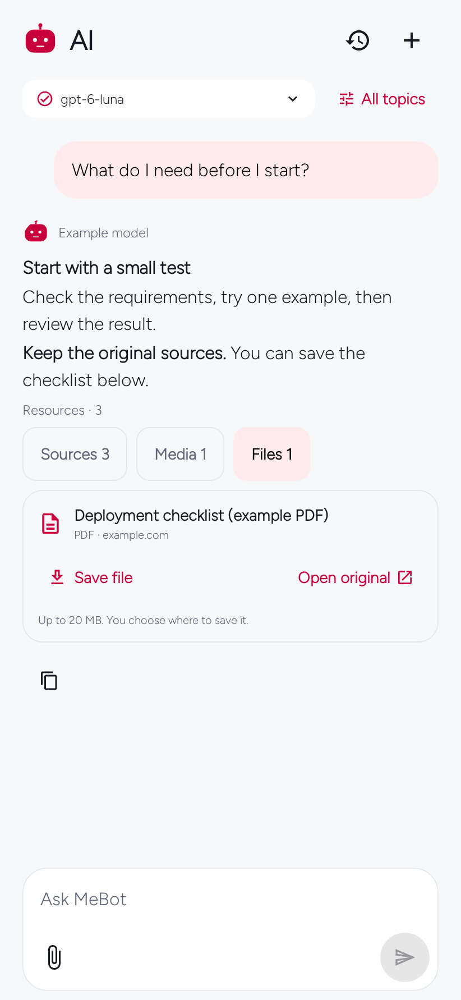

Android · Open source 0.8.0
MeBot Daily
News, learning, music and useful finds, chosen around your interests. Open a story, ask a question, or explore a topic.
Android 8.0+ · 15.9 MB · English & Kiswahili
Official MeBot 0.8.0. Updates your original MeBot installation. Keep MeBot Test installed until you have moved any data you need. Release notes.
Connect the AI account you use
Use MeBot’s ChatGPT sign-in where your account supports it, or choose an API key. Model access and usage limits depend on your provider.
Account setup and limits →


Start with what you like
A few choices. Your first feed.
Pick topics, add an optional city or interest, then open your feed. No context file required.


Read and ask
Keep the story and the answer together.
Read sourced explanations, ask follow-up questions and switch the topic of a conversation.
Choose how you use it
News, technology, opportunities, learning, music, weather and more.
Read an explanation with source links, then keep the conversation going.
Save a story, reorder modules or change the information MeBot uses about you.
Optional tools
Make room for the rest of your day.
Alarms, focus and check-in sit alongside your feed. You decide which modules stay enabled.


Screens are native Android renders with example content, not live account results. Each image is labelled by version. Image notes.